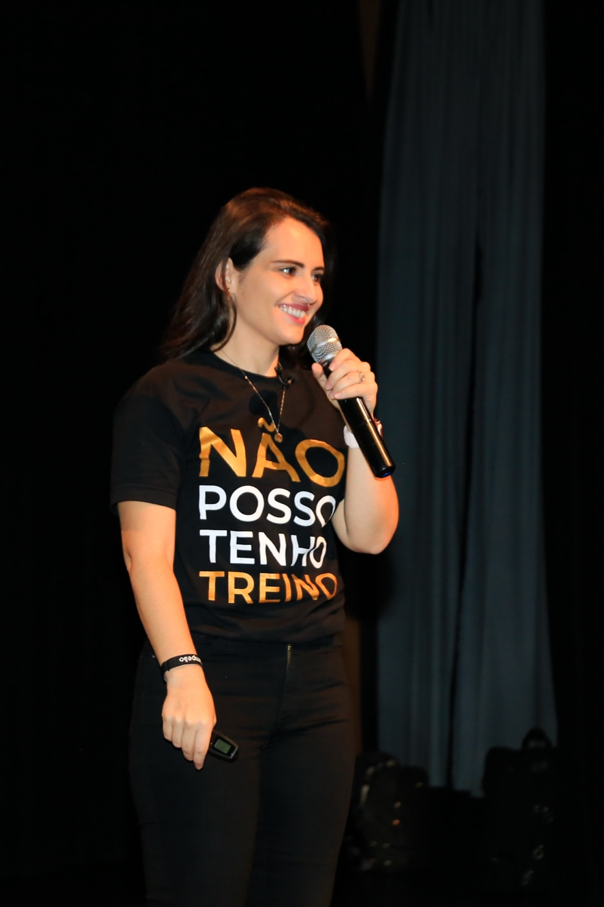
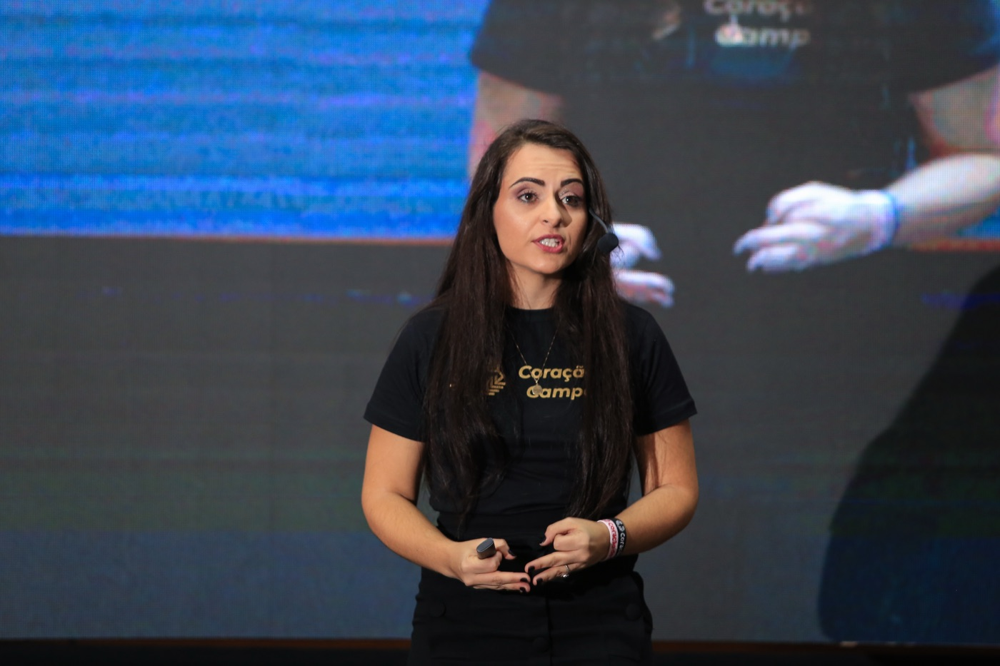
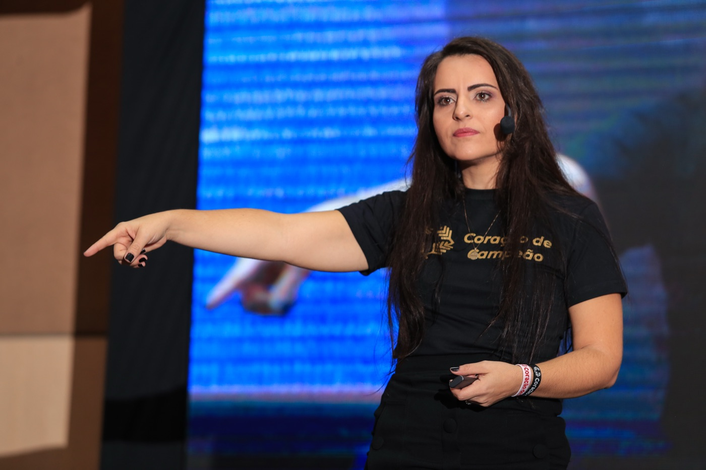

×
×
A cabeça também
entra em quadra.
Um treinamento mental feito sob medida para a equipe de badminton da Hípica, conduzido por Mayra Ramos.
O que entregamos
Um treinamento mental
feito para a sua equipe.
Não é uma palestra pronta. O Atleta Campeão monta o encontro a partir do que a comissão técnica vê na quadra.
01DiagnósticoA comissão técnica responde um briefing de 5 minutos.
02Encontro no clubeMayra conduz 45 a 60 minutos com os atletas.
03Prática para o treinoUma ferramenta para usar na rotina.
Personalizado para o badminton
A comissão escolhe o foco.
01Foco
Voltar para o próximo ponto depois de um rali perdido.
02Confiança
Errar uma devolução fácil e sacar sem medo.
03Pressão
O 15 a 15 do set decisivo.
04Controle emocional
A irritação com a arbitragem ou com a dupla.
Atleta Campeão × Hípica de Campinas02
O treinamento na prática
Mayra em ação:
treinamento mental ao vivo.



Pilar 01Atletas
- Controle emocional na competição
- Foco consistente
- Confiança sob pressão
Pilar 02Treinadores
- Liderar esta geração de atletas
- Disciplina sem desgaste
- Cultura de equipe
Pilar 03Pais
- Apoiar sem cobrar demais
- Lidar com a derrota
- Diálogo com o jovem atleta
Na Hípica: o foco é a equipe de badminton, e o encontro pode incluir a comissão técnica e os pais.
Atleta Campeão × Hípica de Campinas03
Quem conduz
Mayra
Ramos.
20 anos na Seleção Brasileira de Patinação Artística. Fundadora do Atleta Campeão.
- Vice-campeã mundialpor equipes
- 2x melhor do Brasileleita pelo Comitê Olímpico do Brasil
- Bronze no PanJogos Pan-Americanos de Santo Domingo
- Campeã pan-americanae sul-americana de duplas
Formação nos EUAPsicologia esportiva, neurociência esportiva, coaching e hipnoterapia clínica.
ComunicaçãoRepórter na TV Tribuna (Globo) e comentarista dos Jogos de Inverno na Record.
Atleta Campeão × Hípica de Campinas04
Sobre o Atleta Campeão
A maior referência em
treinamento mental
esportivo do Brasil.
Fundado por Mayra Ramos nos Estados Unidos, em 2016. No Brasil desde 2017, atende atletas, forma profissionais e leva o método a clubes e equipes.
30 mil+atletas impactados
400 mil+seguidores
2016fundação nos EUA
Atendimento individualTreinamento mental para atletas de todo o Brasil e do exterior.
Clubes e equipesPalestras e treinamentos sob medida, presenciais ou online.
FormaçãoPós-graduação e cursos para quem trabalha com o esporte.
Clubes e equipes que já receberam o Atleta Campeão
Atleta Campeão × Hípica de Campinas05
A parceria
O treinamento é nosso.
A contrapartida é a gravação.
A Hípica recebe
- Treinamento mental sob medida
- Conduzido por Mayra Ramos
- Uma prática para a rotina de treino
- Visibilidade nos canais do Atleta Campeão
Sem custo para o clube
Em contrapartida
- O Atleta Campeão filma o encontro
- E publica os registros autorizados
- Com alinhamento prévio de uso da marca
AutorizaçãoImagem só com o ok de cada participante.
MenoresCom autorização dos responsáveis.
EscolhaQuem preferir não aparece.
O Atleta Campeão na Prática mostra o treinamento mental acontecendo dentro do clube.
Atleta Campeão × Hípica de Campinas06
Próximos passos
1. BriefingA comissão responde.
2. FocoMayra monta o encontro.
3. AgendaData, grupo e autorizações.
4. EncontroTreinamento e gravação.
Responda pelo celular · 5 minutosatletacampeaotreinamentos.com/propostas/hipica-campinas
Briefing da comissão técnica
1. Qual tema seria mais útil agora?
FocoConfiançaPressãoControle emocional
2. Em que situação esse desafio aparece?
3. O que gostariam de ver diferente na quadra?
4. O que vocês já fazem e funciona?
5. Algum cuidado com a dinâmica ou a filmagem?
6. Quantos atletas e qual a melhor data?
Atleta Campeão × Hípica de Campinas07